Wed, 07 Mar 2012 13:09:04 +0000
Black & White Contemporary Loft in Stockholm, Sweden
Black & White Contemporary Loft in Stockholm, Sweden
We seem to have a passion for Swedish apartments and houses as we wrote about plenty of them on Decoist. Today, we’re at it again with a new, rather small, contemporary loft in Post Hall, in central Stockholm. As usual, we’re looking at a black...
We seem to have a passion for Swedish apartments and houses as we wrote about plenty of them on Decoist. Today, we’re at it again with a new, rather small, contemporary loft in Post Hall, in central Stockholm. As usual, we’re looking at a black and white interior that makes the 68 sqm area look much larger than it is. And it’s more special, if we may add, thanks to the big windows that allow plenty of natural lighting inside and the dark-stained oak parquet floors for contrast.
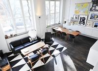
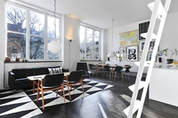
What you see below is a two room apartment with one bedroom. It’s partially illuminated with spotlights in the ceiling, has an open-space living room and a kitchen with an island and with stylish benches in white coriander, a shower room with a washer and dryer, as well as two contrasting glass panels, and what looks like a very comfortable bedroom accessible directly from the living room. There also seems to be a “hidden” place to house your guests whenever needed — it’s accessible via a ladder, has some functional furniture and a bed, nothing more; just make sure your guests don’t drink too much!
Quite stylish, don’t you think? Costs 4.5M Swedish Crowns, or around $665,000 at today’s rate. (more info here)
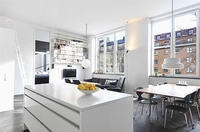
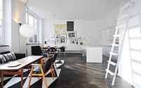

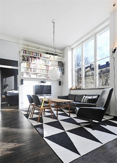
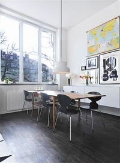
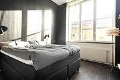
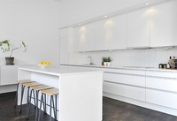
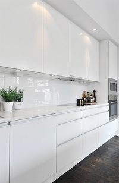
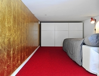
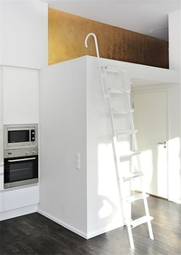
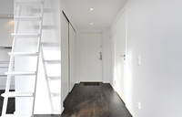
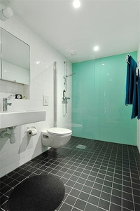
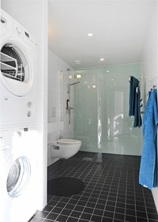
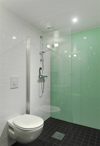
Wed, 07 Mar 2012 10:31:32 +0000
Astarte Suites: Honeymoon Destination in Santorini, Greece
Astarte Suites: Honeymoon Destination in Santorini, Greece
We’re just a few months away from summer and I’m pretty sure some of you are seeking places to spend your short vacation this year — in style and pampered in luxury, maybe? If so, the exquisite Santorini Island in Greece, could be the perfect...
We’re just a few months away from summer and I’m pretty sure some of you are seeking places to spend your short vacation this year — in style and pampered in luxury, maybe? If so, the exquisite Santorini Island in Greece, could be the perfect spot. And if you decide to go for this, you may also want to consider the Astarte Suites Hotel. We just got an email from their general manager with a bunch of pictures and a bit more details, and must say we’re stunned with what Astarte has on offer. Mainly because there are just nine suites, all sitting on the brink of a cliff-edge (yeah, literally) in Akrotiri’s Caldera, boasting spectacular panoramic views across of Aegean Sea.
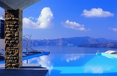
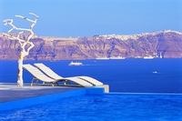
George Moschotis, general manager for Astarte Suites, said — “Cycladic architecture and a style that is sympathetic to the natural surrounds of volcanic lava reliefs lends a sophisticated edge to this boutique hotel. The interior is inspired by ancient Mediterranean cultures, and no two suites are the same. All have jacuzzi tubs, king-size beds and flatscreen televisions. Breakfast is served in the privacy of individual verandas or terraces. With champagne and fresh friut on arrival, complimentary transfers and impeccable staff, this is a glamorous bolthole on one of the most glamorous islands on the planet.”
Folks from Condé Nast Traveller said “This family-run, nine-suites hotel is in the least-developed part of the island. There are panoramas of the caldera, and the village-topped cliffs looking like snow-capped mountains. The best rooms are those with traditional vaulted ceilings. Meals are served on your private terrace.”

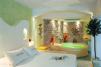
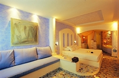
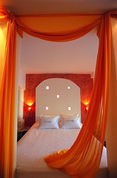
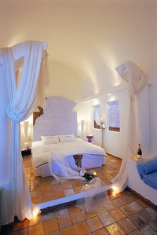
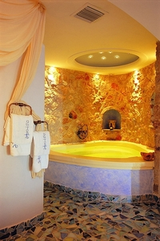
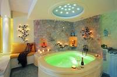
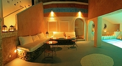
Tue, 06 Mar 2012 18:09:51 +0000
Elegant and Dynamic Atmosphere on Israel’s Mediterranean Coast
Elegant and Dynamic Atmosphere on Israel’s Mediterranean Coast
Indirect lighting and a light but luxurious atmosphere proved to be the perfect choice for the Sea Shell Residence on Israel’s Mediterranean coast. The interiors of this impressive 7,500 square foot contemporary residence were created by Israel-based studio Lanciano Design. Looking at each of the spaces,...
Indirect lighting and a light but luxurious atmosphere proved to be the perfect choice for the Sea Shell Residence on Israel’s Mediterranean coast. The interiors of this impressive 7,500 square foot contemporary residence were created by Israel-based studio Lanciano Design. Looking at each of the spaces, a common characteristic of the interiors seems to be the elegant, open spaces filled with ambient lights that create a changing atmosphere.
By choosing a color palette that would compliment the surroundings, the architects dissolved the boundaries between indoors and outdoors and prolonged the dynamic coastline inside. An open floor plan allowed the creation of an L-shaped cooking/living/entertaining zone open to the outside deck and swimming pool. And also check out the Bloom Chair by Kenneth Cobonpuere featured a while back on Decoist – it looks amazing in this house! (Found on Freshome)
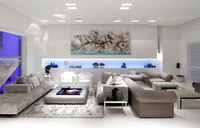
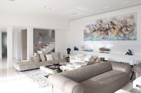
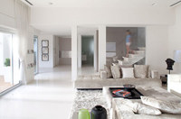
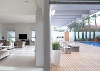
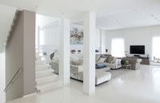
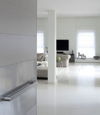
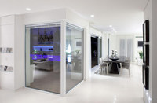
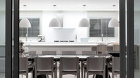
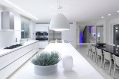
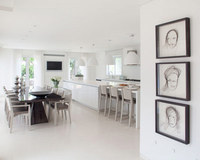
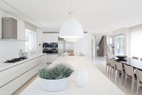
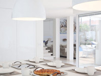
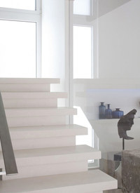
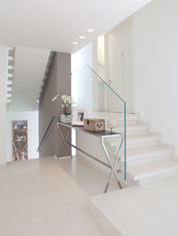
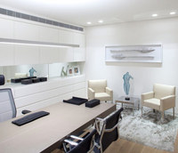
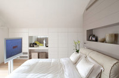
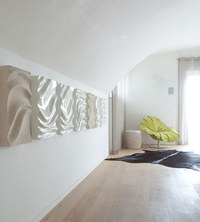
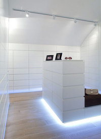
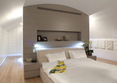
")
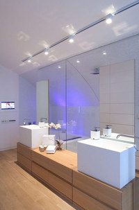
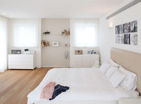
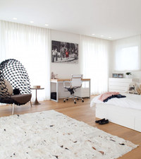
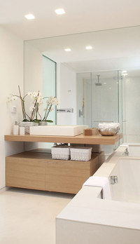
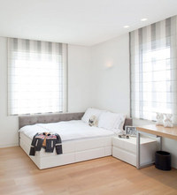
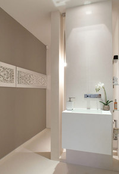
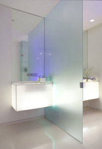
Tue, 06 Mar 2012 16:20:52 +0000
Steel Steady House II in Holland is Poetry in Steel
Steel Steady House II in Holland is Poetry in Steel
Located in a flat landscape near the sea, Steel Steady House II in Leeuwarden, the Netherlands, has crept onto the list of most beautiful buildings in that locality. The house has got its design from renowned architects Archipelontwepers. The Steel Steady House II has got...
Located in a flat landscape near the sea, Steel Steady House II in Leeuwarden, the Netherlands, has crept onto the list of most beautiful buildings in that locality. The house has got its design from renowned architects Archipelontwepers. The Steel Steady House II has got wonderful surroundings, with a vast agricultural field on one side and a rich town on the other. There is a silent lake close to the house, for those who love tranquility. Apparently, the house offers a good deal of peacefulness in the midst of urbanity, which appears to be a queer combination.
As the name indicates, the major material of the Steel Steady House construction is steel. The Steel Steady House II is designed with simple rectangular geometry, with the central space being left open. It’s not just a bunch of separated rooms, but a wonderful architecture, large enough to hold a huge family.
Large glass partition offers unhindered view of the exteriors, whereas the windows opening to the town side get translucent screens that go blind automatically. This ensures maximum privacy for people living inside the house. There is a beautiful pavement from the sidewalk nearby that leads you to the house. The pavement is extremely beautiful, and will entice you to walk over it. Overall, the house is beautiful, tranquil and hygienic, and seems to be brilliant option for people of all ages.
Photography by Marcel van der Burg
Mon, 05 Mar 2012 20:43:01 +0000
Handmade Luke Lamps Take You Back to the Vintage Era
Handmade Luke Lamps Take You Back to the Vintage Era
Tired of the supra-modern chandeliers and expensive lamps? Here comes something rusty for you. The lamps designed by Luke Lamp Co would definitely take you back to olden times. These lamps are reminiscent of vintage period or the times when Thomas Alva Edison discovered modern...
Tired of the supra-modern chandeliers and expensive lamps? Here comes something rusty for you. The lamps designed by Luke Lamp Co would definitely take you back to olden times. These lamps are reminiscent of vintage period or the times when Thomas Alva Edison discovered modern lamps. The very first proof for this is the absence of switches. But, Luke Lamp Co will install one for free, for those who insist.
Again, the appearance of these lamps will definitely bring you back to the good old days. Coir, glass jars, wooden frames and incandescent lamps are the essential components used in its design. One among the Luke’s lamp is “mason jar and rope lamp”, which resembles a tiny Petromax of seventeenth century.
Electric cables are concealed deep inside coir so fears of getting electrocuted are far-off. As you go through Luke’s collection, you could see a more advanced kind of lamp, the one that’s hung from a wooden piece and fixed with screws. The company has a wide range of table lamps in various grades and forms.
Some of them look more industrial while others maintain classical nature. You can see caged lamps, lamps held upon wooden stacks, and a heavy duty work-light resembling modern flood lights. Now, who among you want these lamps? (found on hdf)